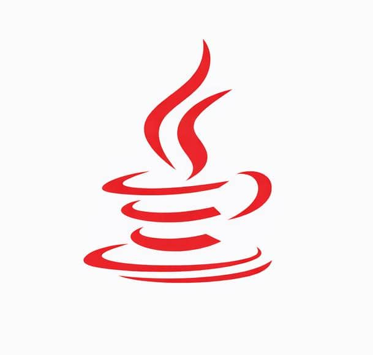
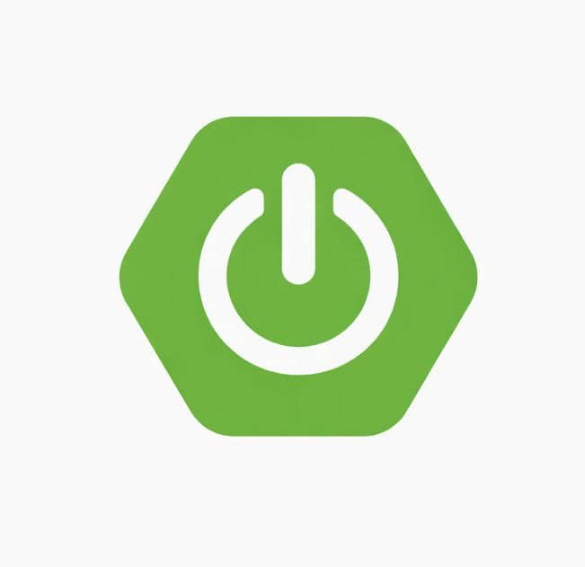
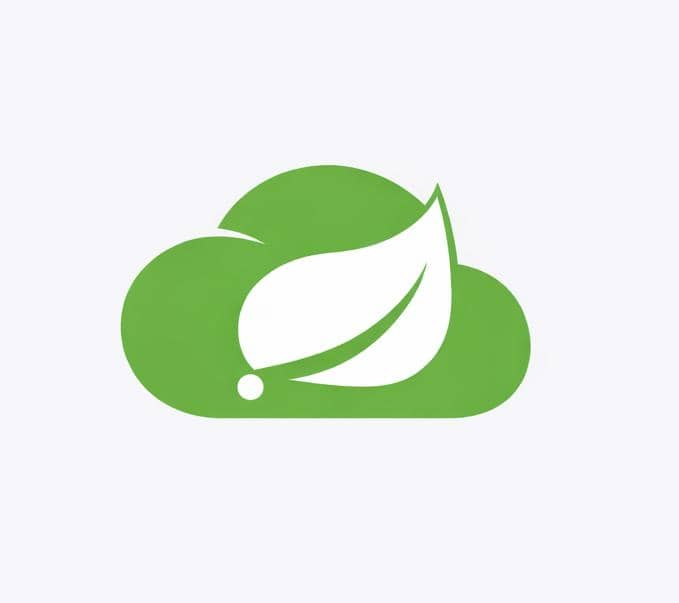
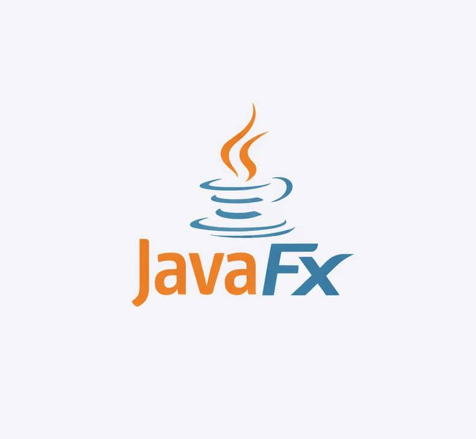
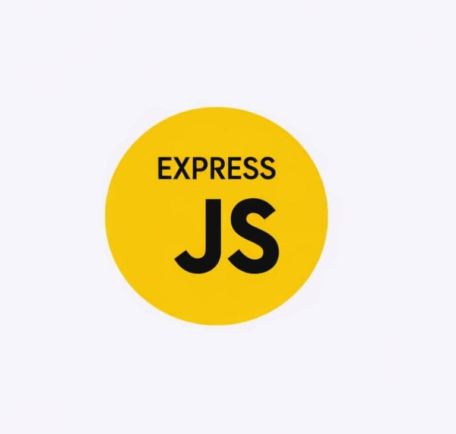
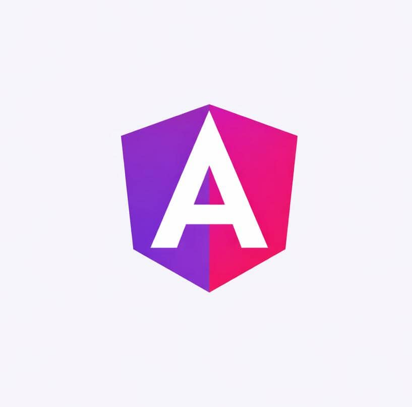
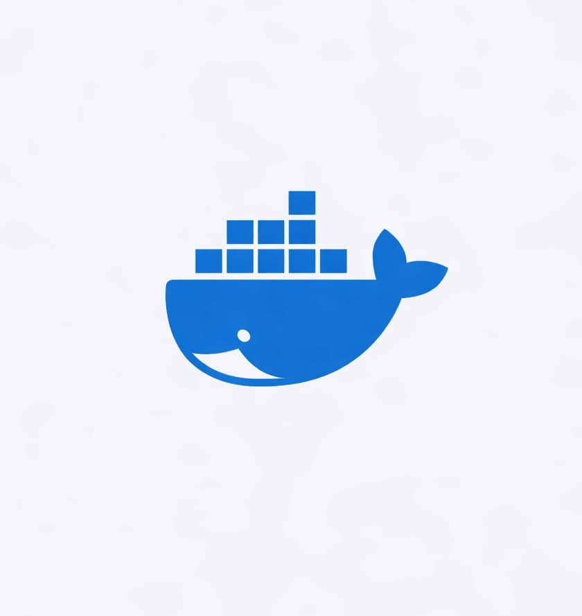
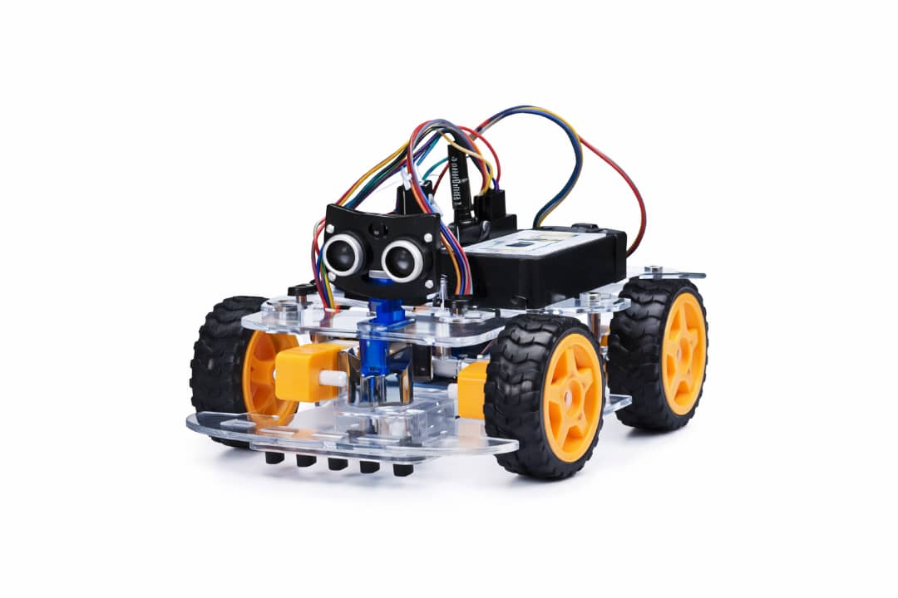

Bonjour 👋, je suis un
Ingénieur
logociel
Je suis Epiphane SEMESSA , un ingénieur dédié à rendre
le monde meilleur , ligne de code par ligne.
Engage-moiI'M HERE FOR YOU
Je suis Epiphane SEMESSA , un ingénieur dédié à rendre
le monde meilleur , ligne de code par ligne.
Engage-moi
Je possède un diplôme professionnel en informatique et télécommunications, et je me spécialise dans la conception d’API, d’applications web et de bureau, ainsi que dans les tests de logiciels. J’aime travailler en équipe et je peux apprendre et appliquer rapidement de nouvelles technologies. Je suis très efficace et dynamique, rigoureux dans mon travail et discipliné dans tout ce que je fais. L’IA est ma deuxième passion après le génie logiciel. Concevoir des solutions numériques sophistiquées pour le bien-être des personnes et de la population mondiale est mon objectif. Voir mes semblables heureux et apprécier ce que je fais me rend heureux et me donne la force de continuer mon combat. Mes loisirs incluent les voyages, les jeux vidéo, le manga, les jeux d’équipe comme le basket-ball et le handball, la musique, le sprint et les cryptomonnaies.

J’ai une vaste expérience dans les technologies suivantes :

BOOTSTRAP

JAVASCRIPT

MANUSCRIPT

PYTHON

JAVA

SPRING BOOT

SPRING CLOUD

JAVAFX
SCENE BUILDER

EXPRESS.JS
NESTJS

ANGULAR

DOCKER
TAILWIND CSS
DaisyUI
Création experte d'applications Spring Boot
Déploiez des API sur un serveur Linux dans un environnement de test et fournissez des URL d'accès et de la documentation aux développeurs front-end
Création d’une application web et exécution de tests
Gérer l’équipe de développement et le projet avec la méthode agile
Organisateur et enseignant de formations gratuites et rémunérées
Optimisation et maintenance d’une application d’administration web
Ajouter et implémenter de nouvelles interfaces selon la maquette (accessible via Figma) fournie
Vérifiez la réactivité de toutes les pages
Ajouter de nouvelles fonctionnalités
Mettre à jour les fonctionnalités existantes
Concevoir tous les systèmes pour les projets
Projets de construction et essais réalisés
Déploiement de projets dans des environnements de développement et de production
Concevoir tous les systèmes pour les projets
Création de projets de bureau, web et backend, et exécution de tests
Déploiement de projets dans un environnement de développement
Gérer et inciter les élèves à planifier l’apprentissage
Un nombre restreint de projets

Composé d’un robot de détection et de patrouille d’objets basé sur l’intelligence artificielle
Ce projet est la conception d’un robot d’exploration capable de détecter des objets et de se déplacer automatiquement. Son utilisateur dispose d’une application de bureau basée sur JavaFX pour visualiser le flux vidéo affiché par le robot, et peut désactiver le mode automatique pour passer au contrôle manuel. Le robot est également équipé de capteurs pour déterminer si un environnement est habitable ou non. Le modèle d’IA de base utilisé est YOLO-COCO.